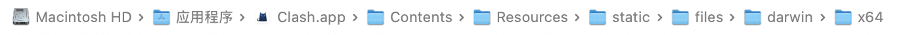
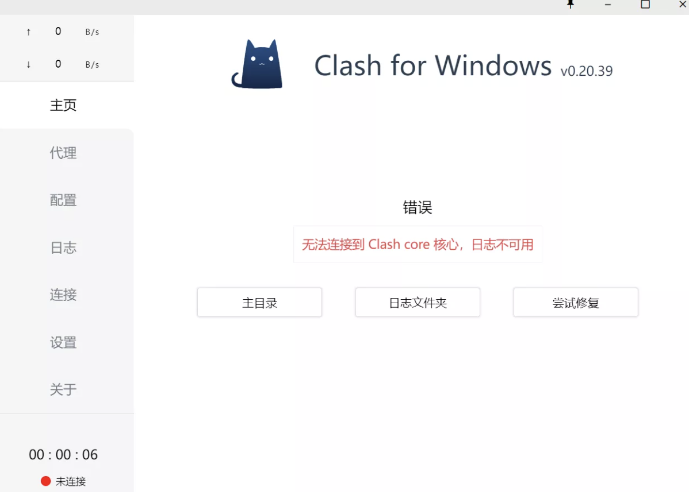

按照网上的教程更换clash内核，但是发现内核更换后，clash无法启动，界面直接报错，根据我的查找和学习，发现问题在于clash找不到新的内核，改了名字也没有用，接下来可以按照本文的内容做：
注意以下所有的内容在clash完全关闭的情况下完成
内核下载
这个其实网上很多现成的教程，但是为了文章的完整性，我还是稍微讲一下，首先，去到clash core的GitHub页面clash core，然后找到你的电脑对应的版本（这里补充一点，mac的话选哪个darwin的），下载之后是一个可执行文件。
内核更换
下载好内核之后，将内核文件放到clash的目录下，直接打开你clash的安装目录，找到内核的文件，如下图
mac
win（文件名可能不是clash-core.exe，比如我的就是clash-win64.exe，但是应该很明显）
resources\static\files\win\x64\clash-core.exe
接下来将原本的内核改一个名字，比如clash-core-old.exe之类的，以防万一，然后不管原来那个内核，将新的内核放到那个目录下，改名字为clash-core.exe（根据你旧内核的名字改，旧内核是什么名字就改成什么名字，比如我就是clash-win64.exe），然后打开clash，按照网上的帖子说，理论上应该就可以正常使用了。
但是我的不可以，而且似乎还有不少人遇见了这个情况
内核绑定
这个原因是clash应用找不到内核，接下来是解决方式，首先是windows的，先退出clash，然后打开自带的文件资源管理器，在地址栏输入 %USERPROFILE%\.config\mihomo 进入文件夹，如果这里显示你没有这个文件夹，那也十分正常，可以直接进行下一步，如果有的话，就要返回上一级然后把这个文件夹删除，再进行下一步
打开 powershell ，执行以下命令，执行完成后会提示 创建的符号链接
cmd /c mklink /d "%USERPROFILE%\.config\mihomo" "%USERPROFILE%\.config\clash"
然后就解决了，重新打开clash，就可以正常使用了。
对于mac而言其实也差不多，打开终端，输入以下命令：
先用这个指令把原来的内核文件相关的内容删了，或者你手动删除
rm -rf ~/.config/mihomo
然后输入这个指令，建立符号链接
ln -s ~/.config/clash ~/.config/mihomo
然后重新打开clash，就可以正常使用了